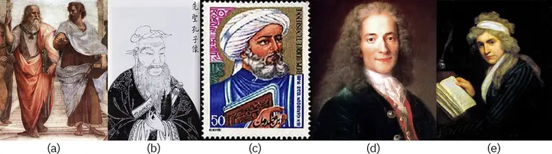
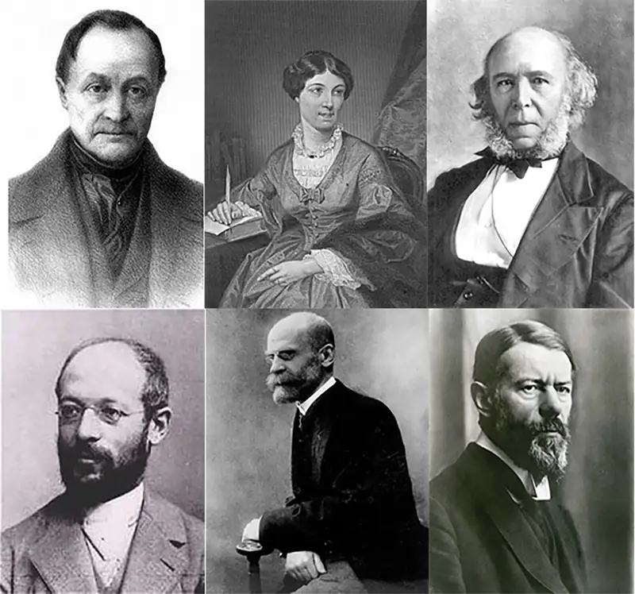
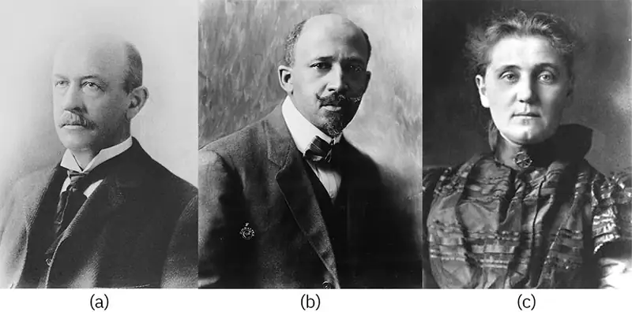
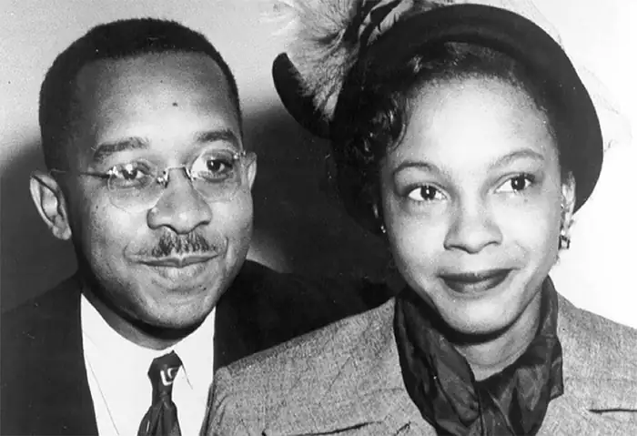

Chapter 1: An Introduction to Sociology¶
Introduction¶
A busy commuter train station might seem like a very individualized place. Tens of thousands or hundreds of thousands of strangers flow through with a singular purpose: to get where they need to go. Whether walking through main doors at a pace of a dozen people each second, or arriving by train hundreds at a time, the station can feel a bit like a balloon being pumped too full. Throngs of people cluster in tight bottlenecks until they burst through corridors and stairways and tunnels to reach the next stage of their journey. In some stations, walking against the crowd can be a tedious, nearly impossible process. And cutting across a river of determined commuters can be almost dangerous. Things are fast, relentless, and necessary.
But are those hundred thousand or half a million or, in the case of Tokyo’s Shinjuku station, 3.5 million people really acting individually? It may seem surprising, but even with those numbers, strangers from across cities can synch up on the same schedules, use the same doors, take one leg of the trip together every day before separating into different directions. After just a few months, faces can become familiar, and senses can be tuned. An experienced commuter can tell where another person is going according to their pace and whatever announcement just went out; they may slow up a bit to let the other person pass, or hold a door open just a bit longer than usual, certain that someone will grab the handle behind them. Many regulars don’t need to check the schedule board; they sense whether a train is running late or whether a track has changed simply by the movement of the crowd.
And then the customs develop: Which side to walk on, how fast to go, where to stand, how much space to leave between people on the escalator. When you board early, which seat should you take? When you see someone running for the train, do you jam the closing door with your foot? How does the crowd treat people who ask for food or money? What’s the risk level in telling someone to be quiet?
Very few of these behaviors are taught. None are written down. But the transit hub, that pocket of constant flow, is an echo of its society. It takes on some aspects of the city and country around it, but its people also form an informal group of their own. Sociologists, as you will learn, may study these people. Sociologists may seek to understand how they feel about their trip, be it proud or annoyed or just plain exhausted. Sociologists might study how length of commute relates to job satisfaction or family relationships. They may study the ways that conditions of a train station affect attitudes about government, or how the difficulty of commuting may lead people to relocate. This understanding isn’t just a collection of interesting facts; it can influence government policy and spending decisions, employer interventions, and healthcare practices. The work sociologists do to understand our society, and the work you will do in learning about it, is meaningful to our lives and our futures.
1.1 What Is Sociology?¶
Learning Objectives
By the end of this section, you should be able to:
- Explain concepts central to sociology.
- Describe how different sociological perspectives have developed.
What Are Society and Culture?¶
Sociology is the scientific and systematic study of groups and group interactions, societies and social interactions, from small and personal groups to very large groups. A group of people who live in a defined geographic area, who interact with one another, and who share a common culture is what sociologists call a society.
Sociologists study all aspects and levels of society. Sociologists working from the micro-level study small groups and individual interactions, while those using macro-level analysis look at trends among and between large groups and societies. For example, a micro-level study might look at the accepted rules of conversation in various groups such as among teenagers or business professionals. In contrast, a macro-level analysis might research the ways that language use has changed over time or in social media outlets.
The term culture refers to the group’s shared practices, values, and beliefs. Culture encompasses a group’s way of life, from routine, everyday interactions to the most important parts of group members’ lives. It includes everything produced by a society, including all the social rules.
Sociologists often study culture using the sociological imagination, which pioneer sociologist C. Wright Mills described as an awareness of the relationship between a person’s behavior and experience and the wider culture that shaped the person’s choices and perceptions. It’s a way of seeing our own and other people’s behavior in relationship to history and social structure (1959). One illustration of this is a person’s decision to marry. In the United States, this choice is heavily influenced by individual feelings. However, the social acceptability of marriage relative to the person’s circumstances also plays a part.
Remember, though, that culture is a product of the people in a society. Sociologists take care not to treat the concept of “culture” as though it were alive and real. The error of treating an abstract concept as though it has a real, material existence is known as reification (Sahn, 2013).
Studying Patterns: How Sociologists View Society¶
All sociologists are interested in the experiences of individuals and how those experiences are shaped by interactions with social groups and society. To a sociologist, the personal decisions an individual makes do not exist in a vacuum. Cultural patterns, social forces and influences put pressure on people to select one choice over another. Sociologists try to identify these general patterns by examining the behavior of large groups of people living in the same society and experiencing the same societal pressures.
Consider the changes in U.S. families. The “typical” family in past decades consisted of married parents living in a home with their unmarried children. Today, the percent of unmarried couples, same-sex couples, single-parent and single-adult households is increasing, as well as is the number of expanded households, in which extended family members such as grandparents, cousins, or adult children live together in the family home. While 15 million mothers still make up the majority of single parents, 3.5 million fathers are also raising their children alone (U.S. Census Bureau, 2020). Increasingly, single people and cohabitating couples are choosing to raise children outside of marriage through surrogates or adoption.
Some sociologists study social facts—the laws, morals, values, religious beliefs, customs, fashions, rituals, and cultural rules that govern social life—that may contribute to these changes in the family. Do people in the United States view marriage and family differently over the years? Do they view them differently than Peruvians? Do employment and economic conditions play a role in families? Other sociologists are studying the consequences of these new patterns, such as the ways children influence and are influenced by them and/or the changing needs for education, housing, and healthcare.
Sociologists identify and study patterns related to all kinds of contemporary social issues. The “Stop and Frisk” policy, the emergence of new political factions, how Twitter influences everyday communication—these are all examples of topics that sociologists might explore.
Studying Part and Whole: How Sociologists View Social Structures¶
A key component of the sociological perspective is the idea that the individual and society are inseparable. It is impossible to study one without the other. German sociologist Norbert Elias called the process of simultaneously analyzing the behavior of individuals and the society that shapes that behavior figuration.
Consider religion. While people experience religion in a distinctly individual manner, religion exists in a larger social context as a social institution. For instance, an individual’s religious practice may be influenced by what government dictates, holidays, teachers, places of worship, rituals, and so on. These influences underscore the important relationship between individual practices of religion and social pressures that influence that religious experience (Elias, 1978). In simpler terms, figuration means that as one analyzes the social institutions in a society, the individuals using that institution in any fashion need to be ‘figured’ in to the analysis.
Sociology in the Real World: Individual-Society Connections
When sociologist Nathan Kierns spoke to his friend Ashley (a pseudonym) about the move she and her partner had made from an urban center to a small Midwestern town, he was curious about how the social pressures placed on a lesbian couple differed from one community to the other. Ashley said that in the city they had been accustomed to getting looks and hearing comments when she and her partner walked hand in hand. Otherwise, she felt that they were at least being tolerated. There had been little to no outright discrimination.
Things changed when they moved to the small town for her partner’s job. For the first time, Ashley found herself experiencing direct discrimination because of her sexual orientation. Some of it was particularly hurtful. Landlords would not rent to them. Ashley, who is a highly trained professional, had a great deal of difficulty finding a new job.
When Nathan asked Ashley if she and her partner became discouraged or bitter about this new situation, Ashley said that rather than letting it get to them, they decided to do something about it. Ashley approached groups at a local college and several churches in the area. Together they decided to form the town's first Gay-Straight Alliance.
The alliance has worked successfully to educate their community about same-sex couples. It also worked to raise awareness about the kinds of discrimination that Ashley and her partner experienced in the town and how those could be eliminated. The alliance has become a strong advocacy group, and it is working to attain equal rights for lesbian, gay, bisexual, and transgender, or LGBTQ individuals.
Kierns observed that this is an excellent example of how negative social forces can result in a positive response from individuals to bring about social change (Kierns, 2011).
1.2 The History of Sociology¶
Learning Objectives
By the end of this section, you should be able to:
- Explain why sociology emerged when it did
- Describe how sociology became a separate academic discipline

For millennia, people have been fascinated by the relationships between individuals and societies. Many topics studied by ancient philosophers in their desire to describe an ideal society are still studied in modern sociology, including theories of social conflict, economics, social cohesion, and power in a continued attempt to describe an ideal society (Hannoum, 2003). Although we are more familiar with western philosophers like Plato and his student, Aristotle, eastern philosophers also thought about social issues.
Until recently, we have very few texts that are non-religious in nature that theorize about social life. From 4th century through the 19th century, the Catholic Church was the seat of power from today’s Turkey in the east to western and northern Europe, including the British Isles. Monks who were charged with rewriting holy texts by hand and the aristocracy were literate. Moreover, the Church consolidated power. In the year 800, Pope Leo III named Charlemagne, the king of Francia (today’s France, Belgium, Netherlands and Germany) emperor of the Holy Roman Empire, giving one individual significant control over most of Europe. Doing so gave the Catholic Church the power to maintain its own traditions and to safeguard them from the influence of people practicing other religions. If any social patterns challenged any belief of the Church, those practitioners were often massacred, burned at the stake, or labeled heretics. As a result, the records that we have are extremely subjective and do not offer an unbiased view of social practice.
In the 13th century, Ma Tuan-Lin, a Chinese historian, was the first to record, in his seminal encyclopedia titled General Study of Literary Remains, the social dynamics underlying and generating historical development.
In the 14th century, the Tunisian historian Ibn Khaldun (1332–1406) set the foundation for both modern sociology and economics. Khaldun proposed a theory of social conflict and provided a comparison of nomadic and sedentary life, an analysis of political economy, and a study connecting a tribe’s social cohesion to its capacity for power (Hannoum, 2003). Khaldun often challenged authorities. As sociologists continue to study and report on social issues and problems, they often find themselves in the center of controversy.
From 1347 to 1522, the bubonic plague ravaged Europe, killing up to 35% of population (Armstrong, 2019). The plague dealt a major blow to the credibility of the Catholic Church. Out of this chaos emerged the the work of Copernicus, Galileo, Leonardo, Newton, Linnaeus, and other philosophers whose work sometimes contradicted church teachings. Events once held to be the product of the divine hand could be analyzed by human reason and observation and could be explained by scientific, testable, and retestable hypotheses. As literacy spread through conquests and colonization, more records and literature became available for sociologists and historians to put social puzzles together.
In the 18th century, Enlightenment philosophers developed general principles that could be used to explain social life. Thinkers such as John Locke, François-Marie Arouet (Voltaire), Immanuel Kant, and Thomas Hobbes responded to what they saw as social ills by writing on topics that they hoped would lead to social reform. Mary Wollstonecraft (1759–1797) wrote about women’s conditions in society. Like Harriet Martineau and Jane Addams, her works were long ignored by the male academic structure, but since the 1970s, Wollstonecraft has been widely considered the first feminist thinker of consequence. Ideas about economic systems, the family, health and hygiene, national offense and defense, were among the many concerns of social life.
The early 19th century saw great changes with the Industrial Revolution, increased mobility, and new kinds of employment. It was also a period of increased trade, travel, and globalization that exposed many people — for the first time—to societies and cultures other than their own. Millions of people moved into cities and many people turned away from their traditional religious beliefs. Ideas spread rapidly, groups were created, political decisions became public decisions. Among a new generation of philosophers, there were some who believed they could make sense of it all.
Creating a Discipline: European Theorists¶

Auguste Comte (1798 – 1857)¶
The term sociology was first coined in 1780 by the French essayist Emmanuel-Joseph Sieyès (1748–1836) in an unpublished manuscript (Fauré et al. 1999). In 1838, the term was reintroduced by Auguste Comte (1798–1857). Comte originally studied to be an engineer, but later became a pupil of social philosopher Claude Henri de Rouvroy Comte de Saint-Simon (1760–1825). They both thought that social scientists could study society using the same scientific methods utilized in natural sciences. Comte also believed in the potential of social scientists to work toward the betterment of society. He held that once scholars identified the laws that governed society, sociologists could address problems such as poor education and poverty (Abercrombie et al. 2000).
Comte named the scientific study of social patterns positivism. He described his philosophy in a series of books called The Course in Positive Philosophy (1830–1842) and A General View of Positivism (1848). He believed that revealing the laws by which societies and individuals interact would usher in a new “positivist” age of history. While the field and its terminology have grown, sociologists still believe in the positive impact of their work.
Harriet Martineau (1802 – 1876)¶
Harriet Martineau introduced sociology to English speaking scholars through her translation of Comte’s writing from French to English. She was an early analyst of social practices, including economics, social class, religion, suicide, government, and women’s rights. Her career began with Illustrations of Political Economy, a work educating ordinary people about the principles of economics (Johnson, 2003). She later developed the first systematic methodological international comparisons of social institutions in two of her most famous sociological works: Society in America (1837) and Retrospect of Western Travel (1838).
Martineau found the workings of capitalism at odds with the professed moral principles of people in the United States. She pointed out the faults with the free enterprise system in which workers were exploited and impoverished while business owners became wealthy. She further noted that the belief that all are created equal was inconsistent with the lack of women’s rights. Much like Mary Wollstonecraft, Martineau was often discounted in her own time because academic sociology was a male-dominated profession.
Karl Marx (1818-1883)¶
Karl Marx was a German philosopher and economist. In 1848, he and Friedrich Engels (1820–1895) coauthored the Communist Manifesto. This book is one of the most influential political manuscripts in history. It also presents Marx’s theory of society, which differed from what Comte proposed.
Marx rejected Comte’s positivism. He believed that societies grew and changed as a result of the struggles of different social classes over the means of production. At the time he was developing his theories, the Industrial Revolution and the rise of capitalism led to great disparities in wealth between the owners of the factories and workers. Capitalism, an economic system characterized by private or corporate ownership of goods and the means to produce them, had developed in many nations.
Marx predicted that inequalities of capitalism would become so extreme that workers would eventually revolt. This would lead to the collapse of capitalism, which would be replaced by communism. Communism is an economic system under which there is no private or corporate ownership: everything is owned communally and distributed as needed. Marx believed that communism was a more equitable system than capitalism.
While his economic predictions did not materialize in the time frame he predicted, Marx’s idea that social conflict leads to change in society is still one of the major theories used in modern sociology.
Herbert Spencer (1820–1903)¶
In 1873, the English philosopher Herbert Spencer published The Study of Sociology, the first book with the term “sociology” in the title. Spencer rejected much of Comte’s philosophy as well as Marx’s theory of class struggle and his support of communism. Instead, he favored a form of government that allowed market forces to control capitalism. His work influenced many early sociologists including Émile Durkheim (1858–1917). Spencer, using Charles Darwin’s work as a comparison said, “This survival of the fittest, which I have here sought to express in mechanical terms, is that which Mr. Darwin has called ‘natural selection,’ or the preservation of favoured races in the struggle for life.” (Spencer, 1864) The statement is often misinterpreted and adopted by those who believe in the superiority of one race over another.
Georg Simmel (1858–1918)¶
Georg Simmel was a German art critic who wrote widely on social and political issues as well. Simmel took an anti-positivism stance and addressed topics such as social conflict, the function of money, individual identity in city life, and the European fear of outsiders (Stapley 2010). Much of his work focused on micro-level theories and analyzed the dynamics of two-person and three-person groups. His work also emphasized individual culture as the creative capacities of individuals (Ritzer and Goodman 2004).
Émile Durkheim (1858–1917)¶
Émile Durkheim helped establish sociology as a formal academic discipline by establishing the first European department of sociology at the University of Bordeaux in 1895 and by publishing his Rules of the Sociological Method in 1895. In Division of Labour in Society (1893), Durkheim further laid out his theory on how societies transformed from a primitive state into a capitalist, industrial society. According to Durkheim, people rise to their proper levels in society based on merit.
Durkheim believed that sociologists could study objective social facts (Poggi, 2000). He also believed that through such studies it would be possible to determine if a society was “healthy” or “pathological.” Healthy societies were stable while pathological societies experienced a breakdown in social norms.
In 1897, Durkheim attempted to demonstrate the effectiveness of his rules of social research when he published a work titled Suicide. Durkheim examined suicide statistics in different police districts to research differences between Catholic and Protestant communities. He attributed the differences to socio-religious forces rather than to individual or psychological causes.
Max Weber (1864–1920)¶
Prominent sociologist Max Weber established a sociology department in Germany at the Ludwig Maximilians University of Munich in 1919. Weber wrote on many topics related to sociology including political change in Russia and social forces that affect factory workers. He is known best for his 1904 book, The Protestant Ethic and the Spirit of Capitalism. The theory that Weber sets forth in this book is still controversial. Some believe that Weber argued that the beliefs of many Protestants, especially Calvinists, led to the rise of capitalism. Others interpret it as simply claiming that the ideologies of capitalism and Protestantism are complementary.
Weber believed that it was difficult, if not impossible, to use standard scientific methods to accurately predict the behavior of groups as some sociologists hoped to do. Weber argued that the influence of culture on human behavior had to be taken into account. This even applied to the researchers themselves, who should be aware of how their own cultural biases could influence their research. To deal with this problem, Weber and Wilhelm Dilthey introduced the concept of verstehen, a German word that means to understand in a deep way. In seeking verstehen, outside observers of a social world—an entire culture or a small setting—attempt to understand it from an insider’s point of view.
In The Nature of Social Action, Weber described sociology as striving to “… interpret the meaning of social action and thereby give a causal explanation of the way in which action proceeds and the effects it produces.” He and other like-minded sociologists proposed a philosophy of anti-positivism whereby social researchers would strive for subjectivity as they worked to represent social processes, cultural norms, and societal values. This approach led to some research methods whose aim was not to generalize or predict (traditional in science), but to systematically gain an in-depth understanding of social worlds.
The different approaches to research based on positivism or anti-positivism are often considered the foundation for the differences found today between quantitative sociology and qualitative sociology. Quantitative sociology uses statistical methods such as surveys with large numbers of participants. Researchers analyze data using statistical techniques to see if they can uncover patterns of human behavior. Qualitative sociology seeks to understand human behavior by learning about it through in-depth interviews, focus groups, and analysis of content sources (like books, magazines, journals, and popular media).
Social Policy and Debate: Should We Raise the Minimum Wage?
During his hard-fought 2020 campaign, President Joe Biden promised Americans that he would raise the federal minimum wage. Opponents of raising the minimum wage argue that some workers would get larger paychecks while others would lose their jobs, and companies would be less likely to hire new workers because of the increased cost of paying them. Biden and other proponents of raising the minimum wage contend that some job loss would be greatly offset by the positive effects on the standard of living of low-wage workers and reducing the income gap between the rich and poor.
Sociologists may consider the minimum wage issue from differing perspectives as well. How much of an impact would a minimum wage raise have for a single mother? Some might study the economic effects, such as her ability to pay bills and keep food on the table. Others might look at how reduced economic stress could improve family relationships. Some sociologists might research the impact on the status of small business owners. These could all be examples of public sociology, a branch of sociology that strives to bring sociological dialogue to public forums. The goals of public sociology are to increase understanding of the social factors that underlie social problems and assist in finding solutions. According to Michael Burawoy (2005), the challenge of public sociology is to engage multiple publics in multiple ways.
Applying the Discipline: American Theorists and Practitioners¶

In the early 1900s, sociology reached universities in the United States. William Sumner held the first professorship in sociology (Yale University), Franklin Giddings was the first full professor of Sociology (Columbia University), and Albion Small wrote the first sociology textbook. Early American sociologists tested and applied the theories of the Europeans and became leaders in social research. Lester Ward (1841 – 1913) developed social research methods and argued for the use of the scientific method and quantitative data (Chapter 2) to show the effectiveness of policies. In order for sociology to gain respectability in American academia, social researchers understood that they must adopt empirical approaches.
W.E.B. Du Bois (1868-1963)¶
William Edward Burghardt (W.E.B.) Du Bois, a Harvard-trained historian, pioneered the use of rigorous empirical methodology into sociology. His groundbreaking 1896-1897 study of the African American community in Philadelphia incorporated hundreds of interviews Du Bois conducted in order to document the familial and employment structures and assess the chief challenges of the community. These new, comprehensive research methods stood in stark contrast to the less scientific practices of the time, which Du Bois critiqued as being similar to doing research as if through the window of a moving car. His scientific approach became highly influential to entire schools of sociological study, and is considered a forerunner to contemporary practices. Additionally, Du Bois’ 1899 publication provided empirical evidence to challenge pseudoscientific ideas of biological racism (Morris, 2015; Green & Wortham, 2018), which had been used as justification to oppress people of different races.
Du Bois also played a prominent role in the effort to increase rights for Black people. Concerned at the slow pace of progress and advice from some Black leaders to be more accommodating of racism, Du Bois became a leader in what would later be known as the Niagara Movement. In 1905, he and others drafted a declaration that called for immediate political, economic, and social equality for African Americans. A few years later, he helped found the National Association for the Advancement of Colored People (NAACP) and served as its director of publications.
Thorstein Veblen (1857 – 1929)¶
After a brief stint as an unemployed college graduate, Thorstein Veblen began to study the economy through a social lens, writing about the leisure class, the business class, and other areas that touched on the idea of ‘working’ itself. He researched the chronically unemployed, the currently unemployed, the working classes, and the impact of technology and business within society. Veblen is known as a co-founder of the branch (or school) of institutional economics.
Jane Addams (1860-1935)¶
Jane Addams founded Hull House, a center that served needy immigrants through social and educational programs while providing extensive opportunities for sociological research. Founded in Chicago, Addams worked closely with University of Chicago’s Chicago School of Sociology. This school of thought places much importance on environment in which relationships and behaviors develop. Research conducted at Hull House informed child labor, immigration, health care, and other areas of public policy.
Charles Horton Cooley (1864-1929)¶
Charles Horton Cooley posited that individuals compare themselves to others in order to check themselves against social standards and remain part of the group. Calling this idea ‘the looking-glass self,’ Cooley argued that we ‘see’ ourselves by the reactions of others with whom we interact. If someone reacts positively to our behavior, theoretically we will continue that behavior. He wrote substantially on what he saw as the order of life in Human Nature and the Social Order (1902) followed by Social Organization in 1909. He was very concerned with the increasing individualism and competitiveness of US society, fearing it would disrupt families as primary groups lost their importance.
George Herbert Mead (1863–1931)¶
George Herbert Mead was a philosopher and sociologist whose work focused on the ways in which the mind and the self were developed as a result of social processes (Cronk, n.d.). He argued that how an individual comes to view himself or herself is based to a very large extent on interactions with others. Though Mead adopted Cooley’s concept of ‘looking-glasses,’ Mead felt that an individual’s reaction to a positive or negative reflection depended on who the ‘other’ was. Individuals that had the greatest impact on a person’s life were significant others while generalized others were the organized and generalized attitude of a social group. Mead often shares the title of father of symbolic interactionism with Cooley and Erving Goffman.
Robert E. Park (1864-1944)¶
Robert E. Park is best known as the founder of social ecology. Attached to the Chicago School, Park focused on how individuals lived within their environment. One of the first sociologists to focus on ethnic minorities, he wrote on the Belgian oppression of the Congolese. When he returned to the US, he and Ernest Burgess researched the inner city to show that no matter who lived there, social chaos was prevalent. As such, it was not the residents who caused the chaos but the environment.
1.3 Theoretical Perspectives in Sociology¶
Learning Objectives
By the end of this section you should be able to:
- Describe the ways that sociological theories are used to explain social institutions.
- Differentiate between functionalism, conflict theory, and symbolic interactionism.
Sociologists study social events, interactions, and patterns, and they develop theories to explain why things work as they do. In sociology, a theory is a way to explain different aspects of social interactions and to create a testable proposition, called a hypothesis, about society (Allan 2006).
For example, although suicide is generally considered an individual phenomenon, Émile Durkheim was interested in studying the social factors that affect it. He studied social solidarity, social ties within a group, and hypothesized that differences in suicide rates might be explained by religious differences. Durkheim gathered a large amount of data about Europeans and found that Protestants were more likely to die by suicide than Catholics. His work supports the utility of theory in sociological research.
Theories vary in scope depending on the scale of the issues that they are meant to explain. Macro-level theories relate to large-scale issues and large groups of people, while micro-level theories look at very specific relationships between individuals or small groups. Grand theories attempt to explain large-scale relationships and answer fundamental questions such as why societies form and why they change. Sociological theory is constantly evolving and should never be considered complete. Classic sociological theories are still considered important and current, but new sociological theories build upon the work of their predecessors and add to them (Calhoun, 2002).
In sociology, a few theories provide broad perspectives that help explain many different aspects of social life, and these are called paradigms. Paradigms are philosophical and theoretical frameworks used within a discipline to formulate theories, generalizations, and the experiments performed in support of them. Three paradigms have come to dominate sociological thinking because they provide useful explanations: structural functionalism, conflict theory, and symbolic interactionism.
Table 1.1 Sociological Theories or Perspectives Different sociological perspectives enable sociologists to view social issues through a variety of useful lenses.
| Sociological Theories/Paradigms | Level of Analysis | Focus | Analogies | Questions that might be asked |
|---|---|---|---|---|
| Structural Functionalism | Macro or Mid | The way each part of society functions together to contribute to the functioning of the whole. | How each organ works to keep your body healthy (or not.) | How does education work to transmit culture? |
| Conflict Theory | Macro | The way inequities and inequalities contribute to social, political, and power differences and how they perpetuate power. | The ones with the most toys wins and they will change the rules to the games to keep winning. | Does education transmit only the values of the most dominant groups? |
| Symbolic Interactionism | Micro | The way one-on-one interactions and communications behave. | What’s it mean to be an X? | How do students react to cultural messages in school? |
Functionalism¶
Functionalism, also called structural-functional theory, sees society as a structure with interrelated parts designed to meet the biological and social needs of the individuals in that society. Functionalism grew out of the writings of English philosopher and biologist, Herbert Spencer, who saw similarities between society and the human body. He argued that just as the various organs of the body work together to keep the body functioning, the various parts of society work together to keep society functioning (Spencer, 1898). The parts of society that Spencer referred to were the social institutions, or patterns of beliefs and behaviors focused on meeting social needs, such as government, education, family, healthcare, religion, and the economy.
Émile Durkheim applied Spencer’s theory to explain how societies change and survive over time. Durkheim believed that society is a complex system of interrelated and interdependent parts that work together to maintain stability (Durkheim, 1893), and that society is held together by shared values, languages, and symbols. He believed that to study society, a sociologist must look beyond individuals to social facts such as laws, morals, values, religious beliefs, customs, fashion, and rituals, which all serve to govern social life (Durkheim, 1895). Alfred Radcliffe-Brown (1881–1955), a social anthropologist, defined the function of any recurrent activity as the part it played in social life as a whole, and therefore the contribution it makes to social stability and continuity (Radcliffe-Brown 1952). In a healthy society, all parts work together to maintain stability, a state called dynamic equilibrium by later sociologists such as Parsons (1961).
Durkheim believed that individuals may make up society, but in order to study society, sociologists have to look beyond individuals to social facts. Each of these social facts serves one or more functions within a society. For example, one function of a society’s laws may be to protect society from violence, while another is to punish criminal behavior, while another is to preserve public health.
Another noted structural functionalist, Robert Merton (1910–2003), pointed out that social processes often have many functions. Manifest functions are the consequences of a social process that are sought or anticipated, while latent functions are the unsought consequences of a social process. A manifest function of a college education, for example, includes gaining knowledge, preparing for a career, and finding a good job that utilizes that education. Latent functions of your college years include meeting new people, participating in extracurricular activities, or even finding a spouse or partner. Another latent function of education is creating a hierarchy of employment based on the level of education attained. Latent functions can be beneficial, neutral, or harmful. Social processes that have undesirable consequences for the operation of society are called dysfunctions. In education, examples of dysfunction include getting bad grades, truancy, dropping out, not graduating, and not finding suitable employment.
Criticism¶
One criticism of the structural-functional theory is that it can’t adequately explain social change even though the functions are processes. Also problematic is the somewhat circular nature of this theory: repetitive behavior patterns are assumed to have a function, yet we profess to know that they have a function only because they are repeated. Furthermore, dysfunctions may continue, even though they don’t serve a function, which seemingly contradicts the basic premise of the theory. Many sociologists now believe that functionalism is no longer useful as a macro-level theory, but that it does serve a useful purpose in some mid-level analyses.
Big Picture: A Global Culture?
Sociologists around the world look closely for signs of what would be an unprecedented event: the emergence of a global culture. In the past, empires such as those that existed in China, Europe, Africa, and Central and South America linked people from many different countries, but those people rarely became part of a common culture. They lived too far from each other, spoke different languages, practiced different religions, and traded few goods. Today, increases in communication, travel, and trade have made the world a much smaller place. More and more people are able to communicate with each other instantly—wherever they are located—by telephone, video, and text. They share movies, television shows, music, games, and information over the Internet. Students can study with teachers and pupils from the other side of the globe. Governments find it harder to hide conditions inside their countries from the rest of the world.
Sociologists research many different aspects of this potential global culture. Some explore the dynamics involved in the social interactions of global online communities, such as when members feel a closer kinship to other group members than to people residing in their own countries. Other sociologists study the impact this growing international culture has on smaller, less-powerful local cultures. Yet other researchers explore how international markets and the outsourcing of labor impact social inequalities. Sociology can play a key role in people’s abilities to understand the nature of this emerging global culture and how to respond to it.
Conflict Theory¶
Conflict theory looks at society as a competition for limited resources. This perspective is a macro-level approach most identified with the writings of German philosopher and economist Karl Marx, who saw society as being made up of individuals in different social classes who must compete for social, material, and political resources such as food and housing, employment, education, and leisure time. Social institutions like government, education, and religion reflect this competition in their inherent inequalities and help maintain the unequal social structure. Some individuals and organizations are able to obtain and keep more resources than others, and these “winners” use their power and influence to maintain social institutions. The perpetuation of power results in the perpetuation of oppression.
Several theorists suggested variations on this basic theme like Polish-Austrian sociologist Ludwig Gumplowicz (1838–1909) who expanded on Marx’s ideas by arguing that war and conquest are the bases of civilizations. He believed that cultural and ethnic conflicts led to states being identified and defined by a dominant group that had power over other groups (Irving, 2007).
German sociologist Max Weber (1864–1920) agreed with Marx but also believed that, in addition to economic inequalities, inequalities of political power and social structure cause conflict. Weber noted that different groups were affected differently based on education, race, and gender, and that people’s reactions to inequality were moderated by class differences and rates of social mobility, as well as by perceptions about the legitimacy of those in power. A reader of Marx, Georg Simmel believed that conflict can help integrate and stabilize a society. He said that the intensity of the conflict varies depending on the emotional involvement of the parties, the degree of solidarity within the opposing groups, and the clarity and limited nature of the goals. Simmel also showed that groups work to create internal solidarity, centralize power, and reduce dissent. The stronger the bond, the weaker the discord. Resolving conflicts can reduce tension and hostility and can pave the way for future agreements.
In the 1930s and 1940s, German philosophers, known as the Frankfurt School, developed critical theory as an elaboration on Marxist principles. Critical theory is an expansion of conflict theory and is broader than just sociology, incorporating other social sciences and philosophy. A critical theory is a holistic theory and attempts to address structural issues causing inequality. It must explain what’s wrong in current social reality, identify the people who can make changes, and provide practical goals for social transformation (Horkeimer, 1982).
More recently, inequality based on gender or race has been explained in a similar manner and has identified institutionalized power structures that help to maintain inequality between groups. Janet Saltzman Chafetz (1941–2006) presented a model of feminist theory that attempts to explain the forces that maintain gender inequality as well as a theory of how such a system can be changed (Turner, 2003). Similarly, critical race theory grew out of a critical analysis of race and racism from a legal point of view. Critical race theory looks at structural inequality based on white privilege and associated wealth, power, and prestige.
Sociology in the Real World: Farming and Locavores: How Sociological Perspectives Might View Food Consumption
The consumption of food is a commonplace, daily occurrence. Yet, it can also be associated with important moments in our lives. Eating can be an individual or a group action, and eating habits and customs are influenced by our cultures. In the context of society, our nation’s food system is at the core of numerous social movements, political issues, and economic debates. Any of these factors might become a topic of sociological study.
A structural-functional approach to the topic of food consumption might analyze the role of the agriculture industry within the nation’s economy and how this has changed from the early days of manual-labor farming to modern mechanized production. Another might study the different functions of processes in food production, from farming and harvesting to flashy packaging and mass consumerism.
A conflict theorist might be interested in the power differentials present in the regulation of food, by exploring where people’s right to information intersects with corporations’ drive for profit and how the government mediates those interests. Or a conflict theorist might examine the power and powerlessness experienced by local farmers versus large farming conglomerates, such as the documentary Food Inc., which depicts as resulting from Monsanto’s patenting of seed technology. Another topic of study might be how nutrition varies between different social classes.
A sociologist viewing food consumption through a symbolic interactionist lens would be more interested in microlevel topics, such as the symbolic use of food in religious rituals, or the role it plays in the social interaction of a family dinner. This perspective might also explore the interactions among group members who identify themselves based on their sharing a particular diet, such as vegetarians (people who don’t eat meat) or locavores (people who strive to eat locally produced food).
Criticism¶
Just as structural functionalism was criticized for focusing too much on the stability of societies, conflict theory has been criticized because it tends to focus on conflict to the exclusion of recognizing stability. Many social structures are extremely stable or have gradually progressed over time rather than changing abruptly as conflict theory would suggest.
Symbolic Interactionist Theory¶
Symbolic interactionism is a micro-level theory that focuses on the relationships among individuals within a society. Communication—the exchange of meaning through language and symbols—is believed to be the way in which people make sense of their social worlds. Theorists Herman and Reynolds (1994) note that this perspective sees people as being active in shaping the social world rather than simply being acted upon.
George Herbert Mead is considered a founder of symbolic interactionism though he never published his work on it (LaRossa and Reitzes, 1993). Mead’s student, Herbert Blumer (1900-1987), coined the term “symbolic interactionism” and outlined these basic premises: humans interact with things based on meanings ascribed to those things; the ascribed meaning of things comes from our interactions with others and society; the meanings of things are interpreted by a person when dealing with things in specific circumstances (Blumer 1969). If you love books, for example, a symbolic interactionist might propose that you learned that books are good or important in the interactions you had with family, friends, school, or church. Maybe your family had a special reading time each week, getting your library card was treated as a special event, or bedtime stories were associated with warmth and comfort.
Social scientists who apply symbolic-interactionist thinking look for patterns of interaction between individuals. Their studies often involve observation of one-on-one interactions. For example, while a conflict theorist studying a political protest might focus on class difference, a symbolic interactionist would be more interested in how individuals in the protesting group interact, as well as the signs and symbols protesters use to communicate their message.
The focus on the importance of symbols in building a society led sociologists like Erving Goffman (1922-1982) to develop a technique called dramaturgical analysis. Goffman used theater as an analogy for social interaction and recognized that people’s interactions showed patterns of cultural “scripts.” He argued that individuals were actors in a play. We switched roles, sometimes minute to minute—for example, from student or daughter to dog walker. Because it can be unclear what part a person may play in a given situation, he or she has to improvise his or her role as the situation unfolds (Goffman, 1958).
Studies that use the symbolic interactionist perspective are more likely to use qualitative research methods, such as in-depth interviews or participant observation, because they seek to understand the symbolic worlds in which research subjects live.
Constructivism is an extension of symbolic interaction theory which proposes that reality is what humans cognitively construct it to be. We develop social constructs based on interactions with others, and those constructs that last over time are those that have meanings which are widely agreed-upon or generally accepted by most within the society. This approach is often used to examine what’s defined as deviant within a society. There is no absolute definition of deviance, and different societies have constructed different meanings for deviance, as well as associating different behaviors with deviance.
One situation that illustrates this is what you believe you’re to do if you find a wallet in the street. In the United States, turning the wallet in to local authorities would be considered the appropriate action, and to keep the wallet would be seen as deviant. In contrast, many Eastern societies would consider it much more appropriate to keep the wallet and search for the owner yourself. Turning it over to someone else, even the authorities, would be considered deviant behavior.
Criticism¶
Research done from this perspective is often scrutinized because of the difficulty of remaining objective. Others criticize the extremely narrow focus on symbolic interaction. Proponents, of course, consider this one of its greatest strengths.
Sociological Theory Today¶
These three approaches still provide the main foundation of modern sociological theory though they have evolved. Structural-functionalism was a dominant force after World War II and until the 1960s and 1970s. At that time, sociologists began to feel that structural-functionalism did not sufficiently explain the rapid social changes happening in the United States at that time. The women’s movement and the Civil Rights movement forced academics to develop approaches to study these emerging social practices.
Conflict theory then gained prominence, with its emphasis on institutionalized social inequality. Critical theory, and the particular aspects of feminist theory and critical race theory, focused on creating social change through the application of sociological principles. The field saw a renewed emphasis on helping ordinary people understand sociology principles, in the form of public sociology.
Gaining prominence in the wake of Mead’s work in the 1920s and 1930s, symbolic interactionism declined in influence during the 1960s and 1970s only to be revitalized at the turn of the twenty-first century (Stryker, 1987). Postmodern social theory developed in the 1980s to look at society through an entirely new lens by rejecting previous macro-level attempts to explain social phenomena. Its growth in popularity coincides with the rise of constructivist views of symbolic interactionism.
1.4 Why Study Sociology?¶
Learning Objectives
By the end of this section, you should be able to:
- Explain why it is worthwhile to study sociology.
- Identify ways sociology is applied in the real world.

When Elizabeth Eckford tried to enter Central High School in Little Rock, Arkansas, in September 1957, she was met by an angry crowd and was turned away by authorities. But she knew she had the law on her side. Three years earlier in the landmark Brown vs. the Board of Education decision, the U.S. Supreme Court had overturned twenty-one state laws that allowed Black and White people to be taught in separate school systems as long as the school systems were “equal.” The decision was nothing short of momentous, not only for education, but for a number of other segregation and discrimination issues that have lasted into this decade. And in that momentous decision, the Supreme Court cited the research of the husband-and-wife team of social scientists, Kenneth and Mamie Clark, as evidence that segregation generates in minority students a feeling of inferiority. In the ‘doll test,’ for example, the Clarks showed children four dolls, two with white skin and yellow hair and two with brown skin and black hair. When asked which doll they preferred, the majority of Black children chose the doll with the light skin doll, and they assigned positive characteristics to it. Most of the Black children discarded the doll with the brown skin—the one that had a closer resemblance to themselves.
When asked to choose the doll that looked like them, many children left the room, started to cry, and/or became depressed. The Clarks’ research contributed to the Supreme Court’s conclusion that separate but equal was damaging to students, and that separate facilities are unequal.
Sociology and a Better Society¶
Since it was first founded, many people interested in sociology have been driven by the scholarly desire to contribute knowledge to this field, while others have seen it as way not only to study society but also to improve it. Besides desegregation, sociology has played a crucial role in many important social reforms, such as equal opportunity for women in the workplace, improved treatment for individuals with mental illnesses or learning disabilities, increased accessibility and accommodation for people with physical disabilities, the right of native populations to preserve their land and culture, and prison system reforms.
The predominant American sociologist, the late Peter L. Berger (1929–2017), in his 1963 book, Invitation to Sociology: A Humanistic Perspective, describes a sociologist as “someone concerned with understanding society in a disciplined way.” He asserts that sociologists have a natural interest in the monumental moments of people’s lives, as well as a fascination with banal, everyday occurrences. Berger also describes the “aha” moment when a sociological theory becomes applicable and understood:
[T]here is a deceptive simplicity and obviousness about some sociological investigations. One reads them, nods at the familiar scene, remarks that one has heard all this before and don’t people have better things to do than to waste their time on truisms—until one is suddenly brought up against an insight that radically questions everything one had previously assumed about this familiar scene. This is the point at which one begins to sense the excitement of sociology. (Berger, 1963)
Sociology can be exciting because it teaches people ways to recognize how they fit into the world and how others perceive them. Looking at themselves and society from a sociological perspective helps people see where they connect to different groups based on the many different ways they classify themselves and how society classifies them in turn. It raises awareness of how those classifications—such as economic and status levels, education, ethnicity, or sexual orientation—affect perceptions.
Sociology teaches people not to accept easy explanations. It teaches them a way to organize their thinking so that they can ask better questions and formulate better answers. It makes people more aware that there are many different kinds of people in the world who do not necessarily think the way they do. It increases their willingness and ability to try to see the world from other people’s perspectives. This prepares them to live and work in an increasingly diverse and integrated world.
Sociology in the Workplace¶
Employers continue to seek people with what are called “transferable skills.” This means that they want to hire people whose knowledge and education can be applied in a variety of settings and whose skills will contribute to various tasks.
Studying sociology can provide people with this wide knowledge and a skill set that can contribute to many workplaces, including
- an understanding of social systems and large bureaucracies;
- the ability to devise and carry out research projects to assess whether a program or policy is working;
- the ability to collect, read, and analyze statistical information from polls or surveys;
- the ability to recognize important differences in people’s social, cultural, and economic backgrounds;
- skills in preparing reports and communicating complex ideas; and
- the capacity for critical thinking about social issues and problems that confront modern society. (Department of Sociology, University of Alabama-Huntsville)
Sociology prepares people for a wide variety of careers. Besides actually conducting social research or training others in the field, people who graduate from college with a degree in sociology are hired by government agencies and corporations in fields such as social services, counseling (e.g., family planning, career, substance abuse), community planning, health services, marketing, market research, and human resources. Even a small amount of training in sociology can be an asset in careers like sales, public relations, journalism, teaching, law, and criminal justice.
Sociology in the Real World: Social Networking Consequences
You’ve probably heard a cautionary story that goes something like this: A high school student spent years working hard, engaging in their community, helping others, and generally growing into a positive and promising young adult. During senior year, they start the college application process, and after a couple of interviews and other interactions, things are looking bright at several of their top choices. But when the time arrives for those fateful notifications about acceptance or rejection, the student and their family are shocked to get rejected from all schools but one. Inquiries from family members and guidance counselors had no results. The only news came in the form of a letter three weeks later from the one school that had accepted the student.
“...After an initial investigation, the University has determined that several posts attributed to you violate our policies, and are offensive and troubling...”
The letter’s remaining two pages detailed the ongoing investigation and outlined the potential outcomes. But that one statement said it all: The student had posted something offensive on social media, and their prospective colleges had found it.
Two years earlier, at the beginning of sophomore year, the student had posted two comments and a meme that mocked a classmate who had been assaulted at a party. Even thought the student had removed them within a few days, the posts lived on in other forums and on a few friends’ pages; there was also the possibility that someone had screen-grabbed them. While social media posts are protected forms of speech in relation to the government, colleges can review them as they evaluate applicants. Employers can do the same, as can romantic partners or even volunteer organizations.
You may believe that a 15-year-old’s social media comments should not impact them years later. Or you may feel that someone who jokes about assault may be a risk to commit a similar act or fail to stop or report one. Sociologists may consider all of those assumptions, and may seek answers or information through research to uncover the impacts, risks, tendencies, and outcomes on the different groups involved. For example, a sociologist might work to discover answers to the following questions:
- Is abusive speech or assault less likely to occur at colleges that screen applicants’ social media posts?
- Do sensitivity trainings or cultural competency programs have an effect on online speech?
- Do colleges treat all community members equally when they discover someone has posted offensive comments or other content?
- Are algorithms and artificial intelligence used to detect problematic comments biased against certain people or communities?
None of these questions could be answered by a single study or even a group of them. But like the Supreme Court’s use of Mamie and Kenneth Clarke’s research, college administrators, high school counselors, and technology companies can use the outcomes of research and analysis to make decisions or implement programs.
Chapter Review¶
Key Terms¶
- antipositivism
- the view that social researchers should strive for subjectivity as they worked to represent social processes, cultural norms, and societal values
- conflict theory
- a theory that looks at society as a competition for limited resources
- constructivism
- an extension of symbolic interaction theory which proposes that reality is what humans cognitively construct it to be
- culture
- a group's shared practices, values, and beliefs
- dramaturgical analysis
- a technique sociologists use in which they view society through the metaphor of theatrical performance
- dynamic equilibrium
- a stable state in which all parts of a healthy society work together properly
- dysfunctions
- social patterns that have undesirable consequences for the operation of society
- figuration
- the process of simultaneously analyzing the behavior of an individual and the society that shapes that behavior
- function
- the part a recurrent activity plays in the social life as a whole and the contribution it makes to structural continuity
- functionalism
- a theoretical approach that sees society as a structure with interrelated parts designed to meet the biological and social needs of individuals that make up that society
- generalized others
- the organized and generalized attitude of a social group
- grand theories
- an attempt to explain large-scale relationships and answer fundamental questions such as why societies form and why they change
- hypothesis
- a testable proposition
- latent functions
- the unrecognized or unintended consequences of a social process
- macro-level
- a wide-scale view of the role of social structures within a society
- manifest functions
- sought consequences of a social process
- micro-level theories
- the study of specific relationships between individuals or small groups
- paradigms
- philosophical and theoretical frameworks used within a discipline to formulate theories, generalizations, and the experiments performed in support of them
- positivism
- the scientific study of social patterns
- qualitative sociology
- in-depth interviews, focus groups, and/or analysis of content sources as the source of its data
- quantitative sociology
- statistical methods such as surveys with large numbers of participants
- reification
- an error of treating an abstract concept as though it has a real, material existence
- significant others
- specific individuals that impact a person's life
- social facts
- the laws, morals, values, religious beliefs, customs, fashions, rituals, and all of the cultural rules that govern social life
- social institutions
- patterns of beliefs and behaviors focused on meeting social needs
- social solidarity
- the social ties that bind a group of people together such as kinship, shared location, and religion
- society
- a group of people who live in a defined geographical area who interact with one another and who share a common culture
- sociological imagination
- the ability to understand how your own past relates to that of other people, as well as to history in general and societal structures in particular
- sociology
- the systematic study of society and social interaction
- symbolic interactionism
- a theoretical perspective through which scholars examine the relationship of individuals within their society by studying their communication (language and symbols)
- theory
- a proposed explanation about social interactions or society
- verstehen
- a German word that means to understand in a deep way
Summary¶
1.1 What Is Sociology?¶
Sociology is the systematic and scientific study of society and social interaction. In order to carry out their studies, sociologists identify cultural patterns and social forces and determine how they affect individuals and groups. They also develop ways to apply their findings to the real world.
1.2 The History of Sociology¶
Sociology was developed as an academic and scientific way to study and theorize about the changes to society brought on by the Industrial Revolution in the eighteenth and nineteenth centuries. Some of the earliest sociologists thought that societies and individuals’ roles in society could be studied using the same scientific methodologies that were used in the natural sciences, while others believed that is was impossible to predict human behavior scientifically, and still others debated the value of such predictions. Those perspectives continue to be represented within sociology today.
1.3 Theoretical Perspectives in Sociology¶
Sociologists develop theories to explain social events, interactions, and patterns. A theory is a proposed explanation of those social interactions. Theories have different scales. Macro-level theories, such as structural functionalism and conflict theory, attempt to explain how societies operate as a whole. Micro-level theories, such as symbolic interactionism, focus on interactions between individuals.
1.4 Why Study Sociology?¶
Studying sociology is beneficial both for the individual and for society. By studying sociology people learn how to think critically about social issues and problems that confront our society. The study of sociology enriches students’ lives and prepares them for careers in an increasingly diverse world. Society benefits because people with sociological training are better prepared to make informed decisions about social issues and take effective action to deal with them.
Section Quiz¶
1.1 What Is Sociology?¶
1. Which of the following best describes sociology as a subject?
- The study of individual behavior
- The study of cultures
- The study of society and social interaction
- The study of economics
Answer
C
2. C. Wright Mills once said that sociologists need to develop a sociological __________ to study how society affects individuals.
- culture
- imagination
- method
- tool
Answer
B
3. A sociologist defines society as a group of people who reside in a defined area, share a culture, and who:
- interact
- work in the same industry
- speak different languages
- practice a recognized religion
Answer
A
4. Seeing patterns means that a sociologist needs to be able to:
- compare the behavior of individuals from different societies
- compare one society to another
- identify similarities in how social groups respond to social pressure
- compare individuals to groups
Answer
C
1.2 The History of Sociology¶
5. Which of the following was a topic of study in early sociology?
- Astrology
- Economics
- Physics
- History
Answer
B
6. Which founder of sociology believed societies changed due to class struggle?
- Emile Comte
- Karl Marx
- Plato
- Herbert Spencer
Answer
B
7. Weber believed humans could not be studied purely objectively because they were influenced by:
- drugs
- their culture
- their genetic makeup
- the researcher
Answer
B
1.3 Theoretical Perspectives in Sociology¶
8. Which of these theories is most likely to look at the social world on a micro level?
- Structural functionalism
- Conflict theory
- Positivism
- Symbolic interactionism
Answer
D
9. Who believed that the history of society was one of class struggle?
- Emile Durkheim
- Karl Marx
- Erving Goffmann
- George Herbert Mead
Answer
B
10. Who coined the phrase symbolic interactionism?
- Herbert Blumer
- Max Weber
- Lester F. Ward
- W. I. Thomas
Answer
A
11. A symbolic interactionist may compare social interactions to:
- behaviors
- conflicts
- human organs
- theatrical roles
Answer
D
12. Which research technique would most likely be used by a symbolic interactionist?
- Surveys
- Participant observation
- Quantitative data analysis
- None of the above
Answer
B
1.4 Why Study Sociology?¶
13. Kenneth and Mamie Clark used sociological research to show that segregation was:
- beneficial
- harmful
- illegal
- of no importance
Answer
B
14. What did the Clarks use in their experiment noted in Exercise 13?
- children and dogs
- adults and dolls
- children and dolls
- adults and pets
Answer
C
15. Studying sociology helps people analyze data because they learn:
- interview techniques
- to apply statistics
- to generate theories
- all of the above
Answer
D
16. Berger describes sociologists as concerned with:
- monumental moments in people’s lives
- common everyday life events
- both a and b
- none of the above
Answer
C
17. Berger writes that sociology
- is not an academic discipline
- makes the strange familiar
- makes the familiar strange
- is not a science
Answer
C
Short Answer¶
1.1 What Is Sociology?¶
18. What do you think C. Wright Mills meant when he said that to be a sociologist, one had to develop a sociological imagination?
19. Describe a situation in which a choice you made was influenced by societal pressures.
1.2 The History of Sociology¶
20. What do you make of Karl Marx’s contributions to sociology? What perceptions of Marx have you been exposed to in your society, and how do those perceptions influence your views?
21. Do you tend to place more value on qualitative or quantitative research? Why? Does it matter what topic you are studying?
1.3 Theoretical Perspectives in Sociology¶
22. Which theory do you think better explains how societies operate—structural functionalism or conflict theory? Why?
23. Do you think the way people behave in social interactions is more like the behavior of animals or more like actors playing a role in a theatrical production? Why?
1.4 Why Study Sociology?¶
24. How do you think taking a sociology course might affect your social interactions?
25. What sort of career are you interested in? How could studying sociology help you in this career?
Further Research¶
1.1 What Is Sociology?¶
Sociology is a broad discipline. Different kinds of sociologists employ various methods for exploring the relationship between individuals and society. Check out more about sociology at this website..
1.2 The History of Sociology¶
Many sociologists helped shape the discipline. To learn more, check out this site featuring prominent sociologists and how they changed sociology.
1.3 Theoretical Perspectives in Sociology¶
People often think of all conflict as violent, but many conflicts can be resolved nonviolently. To learn more about nonviolent methods of conflict resolution check out the Albert Einstein Institution.
1.4 Why Study Sociology?¶
Social communication is rapidly evolving due to ever improving technologies. Check out this website to learn more about how sociologists study the impact of these changes
References¶
References
1.1 What Is Sociology?
Chily, M. (2013). Kids of Tarashing, Astore District, Gilgit-Baltistan, Pakistan. [Photograph]. Retrieved from https://www.flickr.com/photos/mariachily/3334450816/in/photostream/#/photos/mariachily/3334450816/in/photostream/lightbox/.
Elias, N. (1978). What Is Sociology? New York: Columbia University Press.
Kierns, N. (2010). Ashley’s Alliance, unpublished presentation. Ohio State University.
Ludden, J. (2012). “Single Dads By Choice: More Men Going It Alone.” National Public Radio. Retrieved from http://www.npr.org/2012/06/19/154860588/single-dads-by-choice-more-men-going-it-alone.
Mills, C. Wright. (2000 [1959]). The Sociological Imagination. 40th ed. New York: Oxford University Press.
Roggi, S. (2014). Storia di un genitore che ama troppo [Photograph]. immagini tratte da Google Immagini. (Trans: Story of a parent who loves too much [Photograph]. Images taken from Google Images).
Sahn, R. (2013). “The Dangers of Reification.” The Contrary Perspective. Retrieved from http://contraryperspective.com/2013/06/06/the-dangers-of-reification/.
Unknown Photographer. 2013. Million People March in Laneta Park, Manila, Philippines. [Photograph] This Photo by is licensed under CC BY-SA. Retrieved from www.wikicommons.com.
Unknown Photographer. 2013. The Young Family in NJ hosted Sarah from France in 2012-13. Attribution 2.0 Generic (CC BY 2.0) Retrieved from https://www.flickr.com/photos/afsusa/8682763589.
Unknown Photographer. 2017. Zairean Students. [Photograph]. Retrieved from https://dgmt.co.za.
U.S. Census Bureau. 2020. “America’s Families and Living Arrangements: 2020.” Retrieved from https://www.census.gov/data/tables/2020/demo/families/cps-2020.html.
1.2 The History of Sociology
Abercrombie, N., S. Hill, & B. S. Turner. (2000). The Penguin Dictionary of Sociology. London: Penguin.
Armstrong, D. (2019). Years that Changed History: 1215. The Teaching Company.
Buroway, M. (2005). “2004 Presidential Address: For Public Sociology.” American Sociological Review 70 (February): 4–28. Retrieved from http://burawoy.berkeley.edu/Public%20Sociology,%20Live/Burawoy.pdf.
Cronk, G. n.d. “George Herbert Mead.” Internet Encyclopedia of Philosophy: A Peer-Reviewed Academic Resource. Retrieved from http://www.iep.utm.edu/mead/.
Daileader, P. (2007). The Early Middle Ages. The Teaching Company.
Datar, R., Alatas, S., van den Bent, J., & Irwin, R. (2019). The Forum. Ibn Khaldun: 14th Century Sage. Retrieved from https://www.bbc.co.uk/sounds/play/w3csyp5t.
Durkheim, É. (1964 [1895]). The Rules of Sociological Method, edited by J. Mueller, E. George & E. Caitlin. 8th ed. Translated by S. Solovay. New York: Free Press.
The Editors of Encyclopaedia Britannica. (2020). Ma Duanlin Chinese Historian. Retrieved from https://www.britannica.com/biography/Ma-Duanlin.
Fauré, C., J. Guilhaumou, J. Vallier, & F. Weil. (2007 [1999]). Des Manuscrits de Sieyès, 1773–1799, Volumes I and II. Paris: Champion.
Green, D.S. and Wortham, R.A. (2018), The Sociological Insight of W.E.B. Du Bois. Sociological Inquiry, 88: 56-78. Retrieved January 10, 2021, from https://doi.org/10.1111/soin.12179
Hannoum, A. (2003). Translation and the Colonial Imaginary: Ibn Khaldun Orientalist. Middletown, CT: Wesleyan University. Retrieved from http://www.jstor.org/pss/3590803.
Hill, M. (1991). “Harriet Martineau.” Women in Sociology: A Bio-Bibliographic Sourcebook, edited by Mary Jo Deegan. New York: Greenwood Press.
Johnson, B. (2003). “Harriet Martineau: Theories and Contributions to Sociology.” Education Portal. Retrieved from http://education-portal.com/academy/lesson/harriet-martineau-theories-and-contributions-to-sociology.html#lesson.
Morris, A. (2015). The Scholar Denied: W. E. B. Du Bois and the Birth of Modern Sociology. Oakland, California: University of California Press. Retrieved January 10, 2021, from http://www.jstor.org/stable/10.1525/j.ctv1xxtc2
Poggi, Gianfranco. (2000). Durkheim. Oxford, United Kingdom: Oxford University Press.
Ritzer, G. & Goodman, D. (2004). Sociological Theory, 6th Edition. New York: McGraw Hill Education.
Stapley, Pierre. (2010). “Georg Simmel.” Cardiff University School of Social Sciences. Retrieved from http://www.cf.ac.uk/socsi/undergraduate/introsoc/simmel.html.
U.S. Congress Joint Economic Committee. (2010). Women and the Economy, 2010: 25 Years of Progress But Challenges Remain. August. Washington, DC: Congressional Printing Office. Retrieved from http://jec.senate.gov/public/?a=Files.Serve&File_id=8be22cb0-8ed0-4a1a-841b-aa91dc55fa81
1.3 Theoretical Perspectives in Sociology
Allan, K. Contemporary Social and Sociological Theory: Visualizing Social Worlds. Thousand Oaks, CA: Pine Forge Press.
Blumer, H. (1969). Symbolic Interactionism: Perspective and Method. Englewood Cliffs, NJ: Prentice Hall.
Broce, G. (1973). History of Anthropology. Minneapolis: Burgess Publishing Company.
Calhoun, C. (2002). Classical Sociological Theory. Malden, MA: Wiley-Blackwell.
Cooley, C. (1902). Human nature and the social order. NY: Charles Schribner’s Sons. Retrieved from https://www.asanet.org/charles-h-cooley.
Durkheim, É. (1984 [1893]). The Division of Labor in Society. New York: Free Press.
Durkheim, É. (1964 [1895]). The Rules of Sociological Method, edited by J. Mueller, E. George and E. Caitlin. 8th ed. Translated by S. Solovay. New York: Free Press.
Goffman, E. (1958). The Presentation of Self in Everyday Life. Edinburgh: University of Edinburgh, Social Sciences Research Centre.
Goldschmidt, W. (1996). “Functionalism” in Encyclopedia of Cultural Anthropology, Vol. 2, edited by D. Levinson and M. Ember. New York: Henry Holt and Company.
Henry, S. (2007). “Deviance, Constructionist Perspectives.” Blackwell Encyclopedia of Sociology. Retrieved from http://www.sociologyencyclopedia.com/public/tocnode?id=g9781405124331_yr2011_chunk_g978140512433110_ss1-41.
Herman, N. & Reynolds, L. (1994). Symbolic Interaction: An Introduction to Social Psychology. Lanham, MD: Altamira Press.
Horkeimer, M. (1982). Critical Theory. New York: Seabury Press.
Hurst, A. (n.d.) Classical Sociological Theory and Foundations of American Sociology. Retrieved from https://open.oregonstate.education/sociologicaltheory/
Irving, J. (2007). Fifty Key Sociologists: The Formative Theorists. New York: Routledge.
LaRossa, R. & Reitzes, D. (1993). “Symbolic Interactionism and Family Studies.” Pp. 135–163 in Sourcebook of Family Theories and Methods: A Contextual Approach, edited by P. G. Boss, et al. New York: Springer.
Maryanski, A. & Turner, J. (1992). The Social Cage: Human Nature and the Evolution of Society. Stanford, CA: Stanford University Press.
Marx, K. & Engels, F. (1998 [1848]). The Communist Manifesto. New York: Penguin.
Parsons, T. (1961). Theories of Society: Foundations of Modern Sociological Theory. New York: Free Press.
Pew Research Center. (2012). “Mobile Technology Fact Sheet.” Pew Research Internet Project, April 2012. Retrieved from http://www.pewinternet.org/fact-sheets/mobile-technology-fact-sheet/.
Radcliffe-Brown, A.R. (1952). Structure and Function in Primitive Society: Essays and Addresses. London: Cohen and West.
Spencer, Herbert. (1894). The Principles of Biology. New York: D. Appleton and Company.
Stanford University. (2016). George Herbert Mead. Retrieved from https://plato.stanford.edu/entries/mead/.
Stanford University. (2017). Max Weber. Retrieved from https://plato.stanford.edu/entries/weber/
Stryker, Sheldon (1987). The Vitalization of Symbolic Interactionism. Social Psychology Quarterly, 50(1), 83-94.
Turner, J. (2003). The Structure of Sociological Theory. 7th ed. Belmont, CA: Thompson/Wadsworth.
UCLA School of Public Affairs. (n.d.) “What is Critical Race Theory?” UCLA School of Public Affairs: Critical Race Studies. Retrieved from http://spacrs.wordpress.com/what-is-critical-race-theory/.
1.4 Why Study Sociology?
Berger, P. (1963). Invitation to Sociology: A Humanistic Perspective. New York: Anchor Books.
Department of Sociology, University of Alabama. (n.d.) Is Sociology Right for You? Huntsville: University of Alabama. Retrieved from https://www.uah.edu/ahs/departments/sociology/about.
Adapted from Introduction to Sociology 3e by OpenStax, licensed under CC BY 4.0. Access the original for free at openstax.org. Changes: converted to the web reading format of The Open Book Project.